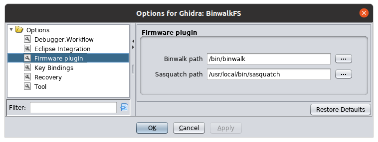

This plugin adds tools for working with firmware images such as a filesystem abstraction built upon binwalk and sasquatch which must both be installed on your system.
After having installed this plugin you should configure it which is done through Edit->Tool Options->Firmware Plugin.
Binwalk is a tool for carving out offsets of "interesing" chunks in a file.
This plugin uses binwalk as a sort of filesystem where each chunk is a separate file. One file type inside a firmware image could be a root filesystem which can then be opened and inspected.
Sasquatch is a patch for SquashFS tools.
SquashFS is one of the most common root filesystem types for embedded Linux systems. It is well defined but many vendors have implemented their own modifications to it meaning that the original tools cannot work with it.
Sasquatch seeks to fix this by adding many of these modifications.
Often times when having analyzed one firmware from a vendor you would like to look at other versions of the same firmware or firmware for similar devices. Often these can be downloaded from the vendors website but this takes time. I have scraped many vendors website for firmware and put them on a web server for this plugin to index. This option should point to this web server.